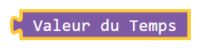
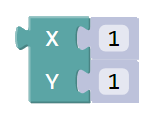

Bravo, tu as réussi la 1° partie!
Tu as maintenant un nouveau bloc pour faire des bonhommes!
Tu peux choisir la couleur comme tu veux mais tu dois faire attention aux deux paramètres dans la
flèche rouge.
Maintenant je vais t'expliquer comment faire bouger ces formes.
Tout d'abord, voici un nouveau bouton.
Celui-ci te permet de voir ce qu'il faut faire.
Le chiffre à l'intérieur t'indique le
numéro de l'image.
Tu peux le récupérer avec ce bloc: 
Pour cela, tu devras utiliser ce bloc.
Il s'agit d'une
boucle
pour indiquer à l'ordinateur que tu veux mettre des figures sur
toutes les images.
Si tu ne le fais pas, l'ordinateur va alors afficher les formes que sur la première image.
Tu te demande sûrement comment faire bouger les formes?
Pour cela nous allons utiliser des CURSEURS!
Un CURSEUR c’est un point invisible que l’on va pouvoir déplacer d’une image à l’autre selon les valeurs qu’on lui donne.
Si on attache le CURSEUR au centre d’une forme et qu'on lui donne un déplacement, alors la forme se mettra à bouger. Ce qui nous permet de réaliser une ANIMATION.
En premier, tu dois indiquer à l'ordinateur où
commencer?
Pour cela tu dois utiliser ce bloc (avec le bloc XY que tu connais) en tout
premier dans ton programme.
ex: Dans ce cas, le curseur commencera en X=1 et Y=1
Ensuite, remplace  par ce bloc afin que la forme suivre le curseur.
Voici un exemple avec un carré!
Enfin, il faut que tu indiques à l'ordinateur le déplacement entre chaque image. Plus les nombres en X et Y seront grands plus la forme se déplacera vite.
Pour aller dans ce sens, il faudra que tu mettes des nombres plus
grand que 0.
ex: 4; 6; 21
Pour aller dans l'autre sens, il faudra que tu mettes des nombres plus
petit que 0.
ex: -1; -3; -12
Tu auras la possibilité sur certaines pages d'utiliser
plusieurs curseurs.
Tu auras juste à changer le
numéro
pour faire bouger plein de formes en même temps!
A toi de jouer !

Clique sur le bouton SUIVANT en haut pour continuer